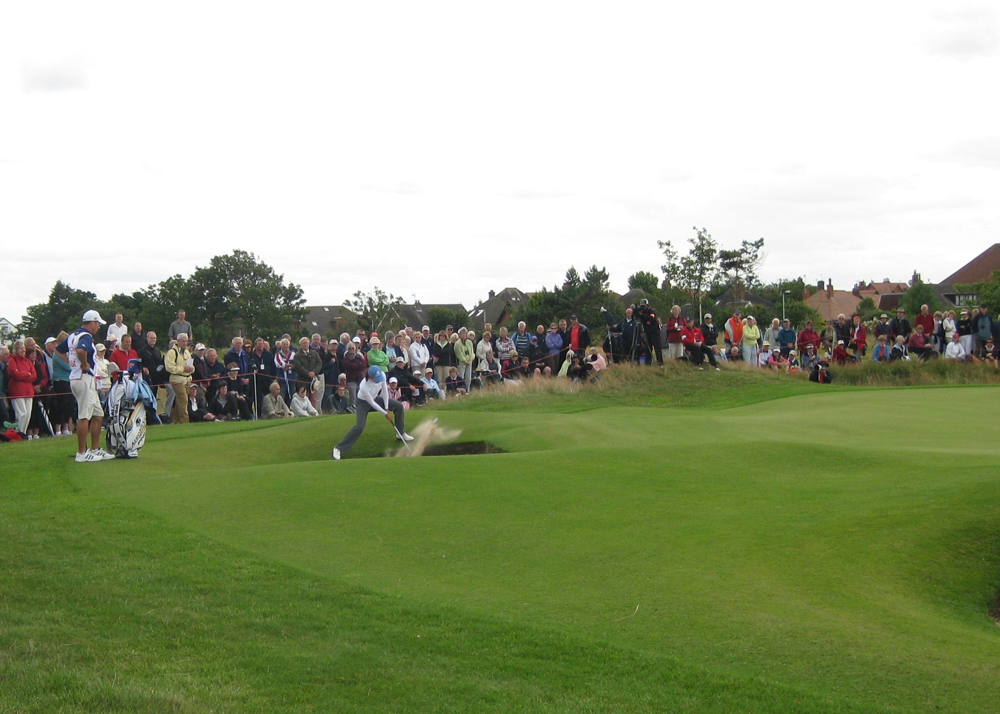
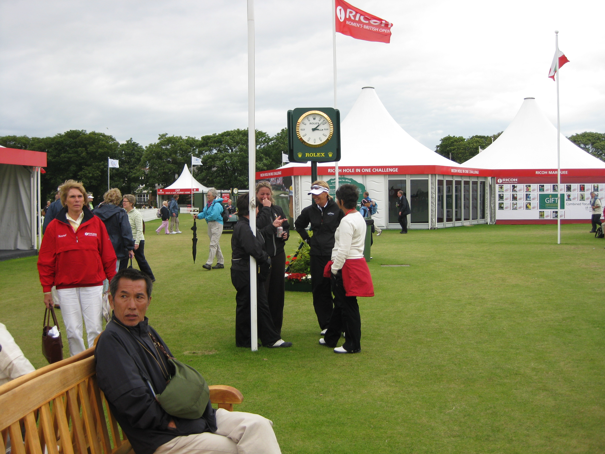

|
|
|
|
Women's British Open - Friday July 31st -Day 2
Arrived at the course at about 9.30am. The wind was not blowing as hard, and it was from a completely different direction from yesterday. I immediately caught up with Larry teeing off on the par3 12th. Well not him obviously! Then headed off up the fairway of the 11th hole, the par 5. Saw Tutta's group teeing off. She and Oyama hit lovely shots in the fairway with Tutta being the longest, but Brittany Lang was off to the right in the longish wispy stuff. She talked about going for it but then decided to hit a little chippy seven iron as she herself described it. Karrie Webb was in the group behind putting on the 10th green. Gwladys Nocera's score wasn't getting any better. Watched them tee off on 11 from behind the tee. The marshalls presence did not stop me taking a few snaps. Climbed onto a high mound which gave a view over the 8th green and the whole of the 10th hole. Saw the Brewerton/Moodie/Alfredsson group teeing off. Alfie was on the left hand side of the fairway down in the hollow. Janice was bang in the middle of the fairway but Becky hit her tee shot over to the rightside of the fairway and just off into the long and wispy stuff. The marshalls on that side of the fairway were up on the fairway bunker mound and had no idea where it ended up. We had to give them shouted instructions so they could find the ball. Becky said thanks to the marshalls and they waved their thanks to us. Becky got it out onto the green and just missed a fifteen footer for birdie.
{kind=link}
The Wie group were next up. Wie hit iron off the tee and was off to the left and just off the fairway and the shortest of the three. She wasn't happy with her approach. It came up short on the green and spun back a little. Natalie was a bit strong with her approach and went off the back. Both got their par. Next up was Paula Creamer, Catriona Matthew and Anna Nordqvist. Catriona was over in Alfie territory but she hit a horrible iron shot and ended up in the front right greenside bunker. She hit a lovely bunker shot out and made a clutch par putt as did Creamer and Nordqvist.
Wandered off down the fairway and saw that Catriona had hit a lovely drive way down the fairway and bang in the middle. Decided to head over to the 13th green to pick up Brew's group again. Whilst waiting for them to get to the 13th tee there was a huge roar from the eleventh green behind me. Catriona had obviously done something good.
Brew hit it way left off the tee and had another visit to the longish wispy stuff but she hit a great 2nd onto the green and had a good look at a long birdie putt. Left herself a nasty little one for par but made it. At this point there was another huge roar, this time from the 12th. Catriona again? It turned out that she had just gone eagle, hole in one!!! Wie was in a nasty spot on the 13th. She got the driver out and measured two club lengths and had to take an unplayable penalty drop. Her next shot was lovely - pin high but 15 feet away. She had a good look at par but didn't make it.
Catriona's group all played the 13th well with Catriona having a 6 footer for birdie which she made. Cue more enthusiastic cheers from the crowd. 5 shots to the good in three holes and back to minus 1 for the tournament. Watched her group tee off and play their approach shots on 14 before wandering off to catch up group Wie on the 15th fairway. Natalie laid up with her second but left it in the right rough from where she hit it off the back of the green. Wie had outdriven her playing partners significantly because her ball landed on a down slope and got a massive scoot forwards and she went for the green in two. She was too far to the left and dribbled off into the greenside bunker. She hit a good bunker shot but missed the birdie putt. Natalie got up and down for her par.
Checked out the leaderboard and get a bacon roll before heading off to the first hole for Soph's start. Got to the first hole in time to see Pressel's group. Shinobu Moromizato was sporting a unique look. Short black skort with shocking pink flashes on her black top and long knee length black socks. Hope it wont catch on!
Mr Gustafson wandered passed so I shook his hand and wished him a good afternoon. He asked about the weather and whether he could borrow my drawsheet. He wanted to know what number Soph would be hitting off the tee. Cristie Kerr hit a lovely shot to give herself a good birdie chance. Soph's tee shot went crashing into the earth face of a greenside bunker and ended up in a horrid spot. She thought about playing it with just one foot in the bunker, but in the end had to crouch down and really gouge it out. She was left with a really long put for par which she didn't make and left herself a nasty one for bogey which didn't drop either. Double to start the day. Not good.
Lorena's group was up next. Karen Stupples hit it way short and right, chipped up onto the green clumsily and didn't make the longish par put. Lorena was in one of the greenside bunkers towards the back of the green. She was in three minds about how to play it as it had a really awkward lie. She tried kneeling down to hit it, then tried one leg in and one leg out of the bunker but couldn't get a balanced stance. In the end she had to spread her legs wide and reach down into the bunker. She did get it out OK but left a difficult par put which she didn't make. Bogey to start for her too.
 Marta Prieto was wearing her trademark long support socks whilst playing in Xtina's group. Minea Blomqvist hit the ball way left into our crowd area. She checked she hadn't hit anybody and apologised for the inconvenience. We realised that all the marshalls on the first hole had buggered off and not been relieved. One poor man was left to cover all of the 1st hole and the 2nd tee. We therefore became DIY marshalls.
{kind=link}
In the next group ShanShan Feng hit it way left and joined us in the undergrowth. I asked the caddy did they need the rope letting down as it was do it yourself but he said if they hit the rope they shouldn't be out there. She didn't get up and down. Spotted Auzzie Mo heading past the 1st green to catch up with Katherine Hull who was in Feng's group. She said she had tried to do the laundry on the way to the course but there was noone around to do the service wash. It had been left in the safe keeping of the pro shop. Apparently a fellow aussie was in doing laundry and offered to do theirs as well and deliver it to the golf course. They declined but found out that she was Rebecca Flood's mum, an amateur who was playing in the Open.
We watched them play the 2nd and 3rd and then I turned round and watched Minnie and Xtina play the 4th before mossieing back to the village for my bacon roll and a shuftie at the giant leaderboard. Mrs Wie was busy checking out the scores. Also lurking in front of the scoreboard was Alison Nicholas, Euro Solheim Cup Captain, Joanne Morley, one of her assistant captains, Liselotte Neumann, an unoffical assistant obviously and Alexandra Armas, the LET Commish.
The left side of the 15th fairway, shich tends to get the most business in the rough was my next destination, and a number of players dropped in to join me. Stacy P landed in some nasty stuff and only managed to advance it 50 yards up the fairway and still in the semi rough. Azahara Munoz, one of the young Spanish amateurs was next in the hay, but got out and laid up nicely. Morgan Pressel was lying not too bad and got out OK so no F-bomb dropped.
Surprisingly Lorena was the next to join us in the rough. She had hit a guy a glancing blow in the chest. She arrived, checked out the lie of the ball and immediately apologised for hitting it towards us asking if she had hit anyone. The guy put his hand up and she apologised again and said she was glad he was OK. She's such a nice lass.
Laura Davies hit her tee shot way, way right. We saw it bounce and therefore knew approximately where it was. The marshall on that side had lost it in the air it was so wayward so we had to guide him to where the ball was. We were giving him instructions from the far side of the fairway so he couldn't give LD assurance the ball had been found. She thus played a provisional ball which was a lovely shot. The marshall couldn't believe how far right it was. It was not in the hay but not a great angle in. She gave it a right wallop and I think got it close to the green. She certainly got her par. I didn't see anymore as I headed home.